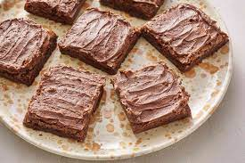

Double Chocolate Cookies
Origin: Michigan Source: Family Recipe Category: Dessert
My daughter learned to make these cookies at a baking camp at Zingermanns and has tweaked the recipe to fit the taste buds of her siblings. They are extremely sugary so the salt helps to balance it. Note, these cookies are best eaten very quickly.
Recipe Ingredients
- Unsalted butter
- Granulated Sugar
- Packed light or dark brown sugar
- Large egg
- Pure vanilla extract
- Semi-sweet chocolate chunks (melted)
- All-purpose flour
- Natural unsweetened cocoa powder
- Baking soda
- Salt
- Semi-sweet chocolate chunks
Recipe Steps
- In a mixing bowl cream together the butter, granulated sugar, and brown sugar
- Add the egg and vanilla extract and beat well
- Add the melted chocolate
- In a separate bowl combine the flour, baking soda, cocoa powder and salt
- Combine the wet and dry ingredients
- Add the unmelted chocolate chunks.
- Form 15 cookies and place on a baking sheet.
- Cook for 12 to 13 minutes at 350 degrees.
Additional Food images


Shrimp Scampi

Recipe Ingredients
2 tablespoons butter 2 tablespoons extra-virgin olive oil 4 garlic cloves, minced ½ cup dry white wine or broth ¾ teaspoon kosher salt, or to taste ⅛ teaspoon crushed red pepper flakes, or to taste Freshly ground black pepper 1¾ pounds large or extra-large shrimp, shelled ⅓ cup chopped parsley Freshly squeezed juice of half a lemon Cooked pasta or crusty bread
Recipe Steps
In a large skillet, melt butter with olive oil. Add garlic and sauté until fragrant, about 1 minute. Add wine or broth, salt, red pepper flakes and plenty of black pepper and bring to a simmer. Let the wine reduce by half, about 2 minutes. Add shrimp and sauté until they just turn pink, 2 to 4 minutes depending upon their size. Stir in the parsley and lemon juice and serve over pasta or accompanied by crusty bread.


Mom's brownie recipe
Origin: American Source: Family Recipe Category: Dessert On weekends, when I was younger, my mom and I would make these brownies together. They were always my favorite dessert and I still make them to this day, but my mom still makes them the best. My favorite part about them is that they are so easy to make!
Recipe Ingredients:
- Sugar
- Flour
- Butter
- Eggs
- Cocoa Powder
- Vanilla
- Baking Powder
- Salt
Recipe Steps:
- Preheat oven to 375 degrees
- Mix together in a medium size bowl Sugar, Flour, Cocoa Powder, Baking Soda and Salt.
- Beat eggs into the dry ingredients.
- Slowly add in the butter after the eggs are fully combined and add vanilla.
- Put the batter into a greased baking sheet and bake for 20-30 minutes and enjoy!